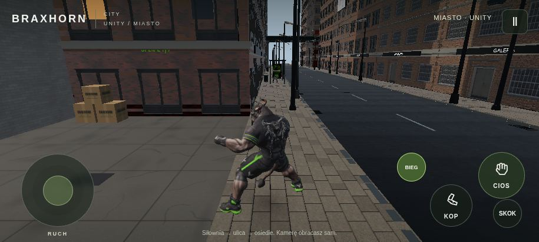
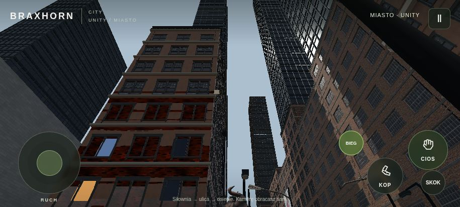
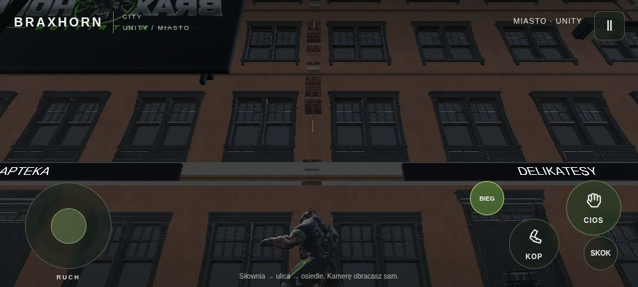
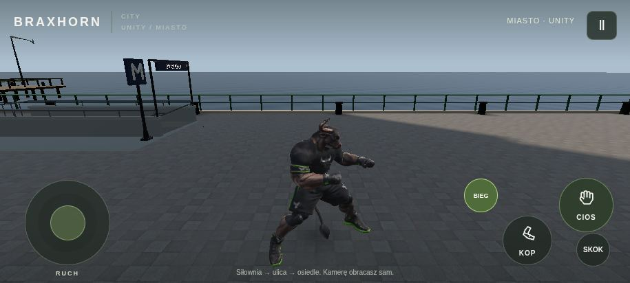
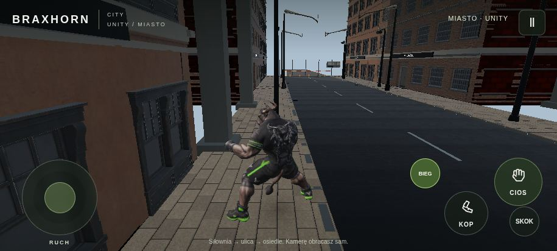
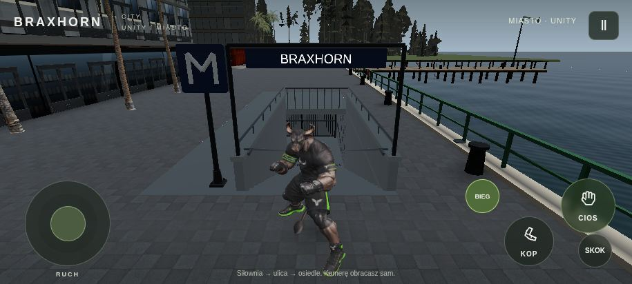

Ulica — poziom Braxa
Asfalt, kostka, latarnie, fasady i proporcje ulicy
Powiększ oryginalny screenshot PNG6 oryginalnych zrzutów z uruchomionego Unity 6 — wczytujesz tylko zdjęcia wybranego odcinka.

Asfalt, kostka, latarnie, fasady i proporcje ulicy
Powiększ oryginalny screenshot PNG
Wysokość zabudowy, stal, szkło i skala fasad
Powiększ oryginalny screenshot PNG
Architektura lokali oglądana z chodnika
Powiększ oryginalny screenshot PNG

Konstrukcja stalowa i dostęp pod wiaduktem
Powiększ oryginalny screenshot PNG